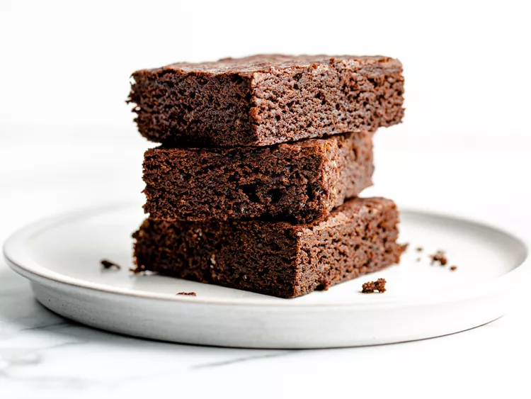

Brownies recipes

This is a tictok brownie
A chocolate brownie or simply a brownie is a chocolate baked confection. Brownies come in a variety of forms and may be either fudgy or cakey,
depending on their density. Brownies often, but not always, have a glossy "skin" on their upper crust. They may also include nuts, frosting,
cream cheese, chocolate chips, or other ingredients.
ingredients
- ½ cup all-purpose flour
- 2 large eggs
- 2 teaspoons vanilla extract
- 1 cup granulated sugar
- ⅓ cup cocoa powder
- ½ cup unsalted butter, plus additional for greasing pan
Steps(Directions)
- Heat oven to 350 degrees F (175 degrees C). Coat an 8x8-inch metal baking dish with butter.
- Melt butter in a large saucepan over low heat. Remove from heat and let cool for 5 minutes. Whisk in cocoa powder, sugar, and vanilla extract. Stir in eggs, 1 at a time until incorporated. Add flour and stir until just combined. Scrape mixture into the prepared pan and smooth the top.
- Bake in the preheated oven until a toothpick inserted comes out clean, 20 to 25 minutes.
- Remove from the oven and cool on a wire rack for at least 45 minutes before cutting.